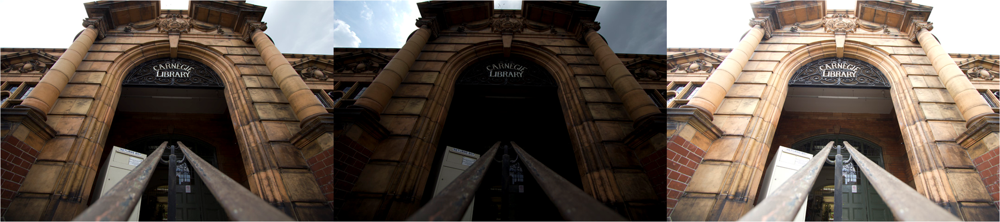
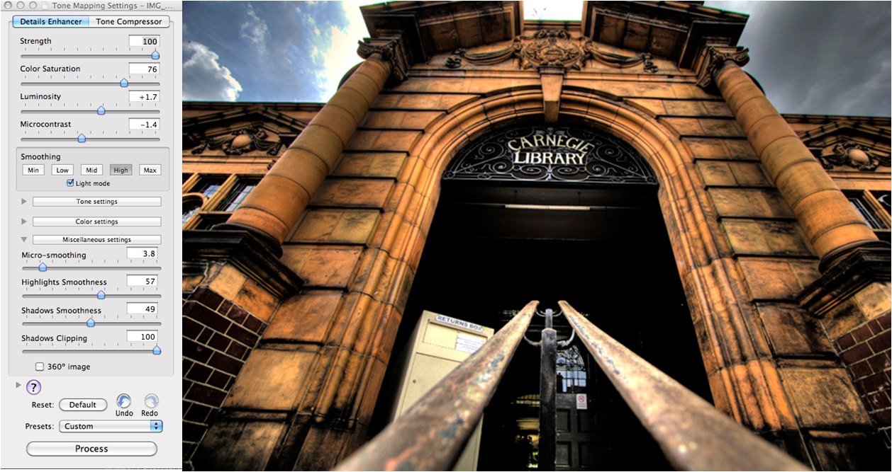

A collection of six black and white HDR photographs
Explores the social and political issues that surround public library closures in England in 2011
Full Project Description
Hard Lines is a photo essay that explores the political atmosphere in London, England immediately before the 2011 London riots that resulted in over three thousand arrests. Tensions were high during the creation of this essay, which captured images of the many public libraries that had come under threat of closure due to budget cuts to public services. Hard Lines uses low angles, high contrast and an expanded tonal range to convey the uncompromising hardline policies being implemented.
Process
Step 1
To produce the HDR photography, the camera was then set to bracket three exposures (one correct, one two stops under, one two stops over). The final output is three images, containing different sets of exposure information.

Step 2
Next the various exposure information was combined into a single colour HDR image. The tone mapping settings were adjusted to increase contrast and expand tonal range. At this stage, highlights and lowlights can be adjusted with a lot of granularity. The colours at this state tended to look over saturated and unrealistic. This was not a concern as the final images would not include colour. The goal at this stage was to bring out shadows and microcontrast.

Step 3
Finally, the image was processed in Photoshop. At this stage, I adjusted the curves and the hue and saturation. Once the image was converted to black and white I balanced the final tones.